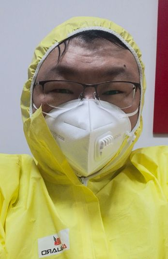
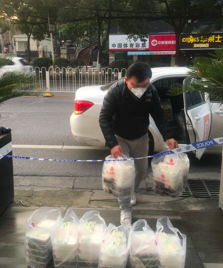

封城第十五天，“今天也是，体温正常” | 三明治武汉每日书 12
原文链接 备份链接 疫情封锁之下，在一座城市中，人们的境遇也各不相同。市民被分隔成微小的个体，以往芜杂的日常生活具体为物资采购和一日三餐。普通人谨小慎微地关注着体温、情绪和城市的变化，试图平复暴风眼周围一丝丝微弱的气流。 作 …
防护和消毒还是很重视的，每送一次，全车消毒一次。
口 述 | 尹 达
整 理 | 黄 祺
我叫尹达，现在是武汉龙安社区的一名志愿者司机。
我的工作是保险销售，疫情发生之前，我一般每天一早去公司，然后出门拜访客户。如果去的地方比较远，我会顺便接一单滴滴。
腊月廿九（1月23日），滴滴平台发了一个公告，招募志愿者去社区服务，我看到马上就报名了。你说担心被传染吗？肯定也有担心。但我是土生土长的武汉人，这个时候，总要做点什么。

从初一一早开始我们就工作了。我和另外4位志愿者被分配到洪山区龙安社区，这里主要以居民为主，离我家30公里左右，开车过来也不算太远。
我们5个志愿者统一接受龙安居民区党组织书记的指挥，他会把用车需求发给我们。
不是随便什么原因都可以用志愿者车辆的，书记这边会把关，只有生病就医的，接送抗疫物资的，特别紧要的公务，和医生接送，才可以用志愿者的车，我们还负责给行动不便的老人、病人以及隔离点的居民送餐。你要是出门探亲啊，自己家采购啊，都不能用。
这十多天来，我平均每天出车三四趟，大多数是送病人去医院。
我接的第一单就是一位60多岁的阿姨，她发烧，社区医务人员已经排查了她的病情，不是病毒引起的发烧。我负责送她去医院就医，但是现在武汉医疗资源非常紧张，发热门诊就这么多，医务人员忙不过来，病床也紧张。我带着他们一家，跑到第三家医院，阿姨才看上病。
这几天开始我会接到接送上海来的医生上下班的任务。上海医生住宿的龙安宾馆，是我们这个社区的一家招待所，属于我们服务的范围。
上海来的医生特别好，一般也不愿意麻烦我们，有的医生能走就自己走回宾馆了。车上，他们看起来特别疲惫，真的很辛苦。
武汉各个区都有隔离观察点，我们的任务还包括给隔离观察点的居民送饭。需要隔离观察的居民统一生活在酒店里面，由社区统一安排专人照顾，也有专业的医生在那里驻点。

非典的时候我只有16岁，对疫情没什么印象。现在我是成年人，感触特别深。真的是一方有难八方支援，我是武汉人，更想做点贡献。
公司给我们志愿者发了防护用品和消毒用品，接送病人的时候我们是全副武装的，防护服、护目镜都戴上。如果是一般的运送物资和接送医生，我们穿防护服，护目镜没戴。防护和消毒还是很重视的，每送一次，全车消毒一次。
我现在每天一早就到社区待命，随时有任务随时发车，一般早上7点半到社区，傍晚没什么事就可以回家了。午饭是外卖，吃了十多天外卖了，特殊时期没有办法，社区书记也是吃外卖的。
晚上进家门前，我先给自己全身喷洒消毒的东西，站一会儿再进去。
我妈妈是医院的护士，爸爸退休了，他们都很支持我做志愿者。中国人嘛，一般不喜欢表达感情，他们就是叮嘱我一定要注意防护，注意安全。如果说和平常有什么不一样，可能就是回家什么都不用我做，饭菜摆好，坐下就吃。父母对我的关心都在里面了。
武汉多数社区，都有我们这样的志愿者司机，平均每个社区有3-7辆志愿者的车，供社区安排使用。我们不会向乘客收一分钱，政府有一定的补贴。

现在武汉的大街上，很少看到人，也很少有车。
过去到了周末，我会跟同学、朋友出去聚会，现在看来，这种特殊的生活还要持续一点时间。
征集令
“战疫”成败，匹夫有责。
《新民周刊》现面向全国征集新冠肺炎采访对象和真实故事：
如果你是参与抗击新冠肺炎疫情的医护人员或其家属，我们希望聆听你的“战役”故事，也希望传达你的诉求。
如果你是确诊、疑似患者本人或家属，我们希望了解你和家人如何“抗疫”的过程，让外界了解你的真实经历。
如果你是疫情严重地区的普通市民，我们希望展现你的乐观，并倾听你所需的帮助。
如果你是公共服务人员或各类捐助者，我们希望看到你的“最美逆行”，记录下你的无私。
……
抗击新冠肺炎疫情，我们诚征对疫情了解的社会各界人士，提供相关线索，说出你的故事，让我们用新闻留存这一切。
《新民周刊》新冠肺炎线索征集值班编辑联系方式（添加时请简要自我介绍）：
周一：应 琛 微信号：paulineying0127
周二：金 姬 微信号：gepetta
周三：黄 祺 微信号：wxid_bf5mudid7oz322
周四：周 洁 微信号：asyouasyou
周五：孔冰欣 微信号：kbx875055141
周六：吴 雪 微信号：shyshine1105
周日：姜浩峰 微信号：jianggeladandong
新闻是历史的底稿，你们是历史的见证者。期待你的故事、你的线索！

▼
大家还都在看这些
▼
转载请在评论区留言，获得授权！
转载时，须注明作者、出处和微信号


原文链接 备份链接 疫情封锁之下，在一座城市中，人们的境遇也各不相同。市民被分隔成微小的个体，以往芜杂的日常生活具体为物资采购和一日三餐。普通人谨小慎微地关注着体温、情绪和城市的变化，试图平复暴风眼周围一丝丝微弱的气流。 作 …
原文链接 备份链接 口述 黄晓民 采访 张瑾 联系到黄晓民时，已是 2 月 2 日晚上 8 点多，他刚协调完一批送给医院的物资回到家中。电话那头传来咳嗽声。 黄晓民，38 岁，南国地产的一名市场推广。1 月 23 日成立武汉 123 志愿 …
原文链接 备份链接 作者：北林 排版：北林 图片：北林 特别感谢：老B、小Y、老H、N、蛋仔 特殊内容：兄弟父亲为武汉医生感染逝世、姐姐感染 声明内容：本文昨日发送后因争议暂删除，现重发，内容仍未删改，由于实际完成于昨日，彼时具有强烈情 …
原文链接 备份链接 疫情发展 根据丁香医生实时数据，截至 2020 年 2 月 4 日 18 时，全国累计确诊病例 20520 例，疑似病例 23214 例。较昨日，新增确诊病例 3284 例，新增疑似病例 5027 例。其中， …
原文链接 备份链接 - 疫 情 之 下 - 只有在这样的特殊时刻，我们才体会到平平常常的日子是多么美好，多么幸福…… ” 疫情爆发得如此迅猛，让所有人始料未及。 己亥年腊月二十九，公历2020年1月23日，我去单位上年前最后一天班，那时我 …